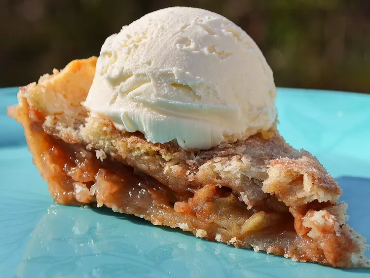

Sunday's Apple Pie

Description:
This is a delicious apple pie perfect for a Sunday's brunch!
This dish is expected to take 1 hour and 35 minutes
to make, and it will serve 8 people.
Ingredients:
- 1/2 cup white sugar
- 2 tablespoons all-purpose flour
- 2 teaspoons ground cinnamon
- 3 tablespoons unsalted butter
- 1 (14.1 ounce) package double-crust pie pastry, thawed
- 6 medium tart apples - peeled, cored, and sliced
Steps:
- Preheat the oven to 350 degrees F (175 degrees C). Place a
baking sheet on an oven rack.
- Stir sugar, flour, and cinnamon together in a small bowl until
well combined. Cut butter into small pieces; divide into two equal piles.
-
Roll out pastry to an 11- or 12-inch circle; press into a 9-inch pie pan.
Roll out top crust and set aside.
- Place sliced apples into a large bowl. Pour sugar mixture over top and add
1/2 of the butter pieces. Toss apples until thoroughly coated. Pour into
the pastry-lined pie pan.
- Dot apples with remaining butter. Place second pastry on top. Seal edges
and cut steam vents in top crust.
- Set pie on the baking sheet in the preheated oven. Bake until filling is
bubbly and crust is golden brown, 50 minutes to 1 hour.